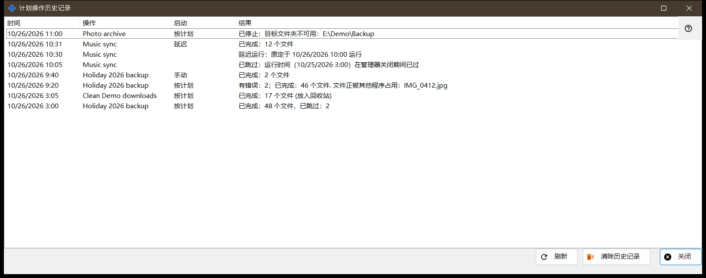
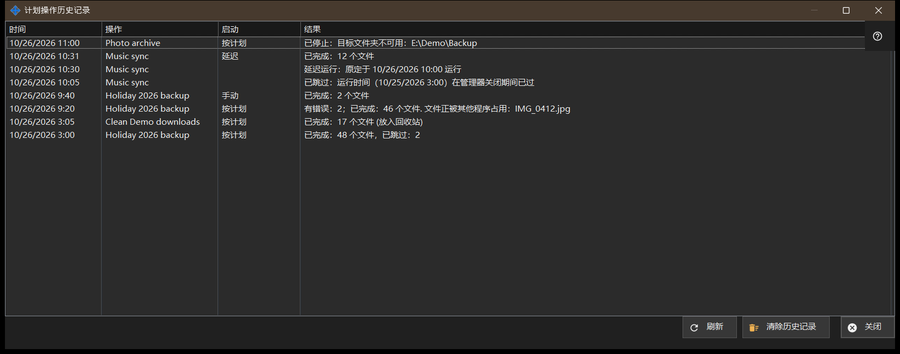

计划操作历史记录
用途说明
显示日志中记录的计划文件操作的近期运行和备注。它从 Share Manager 设置的「计划文件操作」页面上的「历史记录..」打开。


操作顺序
- 阅读列表：时间、操作、启动和结果。
- 如果结果较长，请加宽窗口。
- 点击「刷新」重新读取日志。
- 点击「清除历史记录」并确认以清空它。
- 点击「关闭」。
界面元素
列
时间、操作（其名称）、启动和结果。启动为按计划、手动、全部运行或延迟，对备注则为空。窗口在打开时和点击「刷新」时读取最近 200 条日志记录；它不会自动更新。
运行结果
「已完成：N 个文件」，如有文件被略过则追加「，已跳过：M」，删除时追加「（放入回收站）」。「有错误：N；已完成：M 个文件」，后面跟第一个原因，例如文件正被使用、无法访问、文件未找到或已更改，或磁盘已满。「已停止：..」表示某道障碍使运行终止，例如无法访问的文件夹、没有保存密码或服务器密钥未确认的资源，或离线的设备。「未启动：..」表示定义被拒绝，另有「已跳过：..」和「已中断」。日志保存的是代码而不是原始错误文本，因此措辞会跟随当前语言。
备注
没有启动值的行是备注：「已跳过：运行时间（..）在管理器关闭期间已过」、「延迟运行：原定于 .. 运行」、「已拒绝：此操作已在运行或正在排队等待」以及「已恢复：停止原因已消除」。
清除历史记录
询问：要清除计划操作的历史记录吗？操作及其计划不会改变。默认答案为「否」。它只清空此日志；操作及其计划保留。历史记录为空时，该按钮不可用。